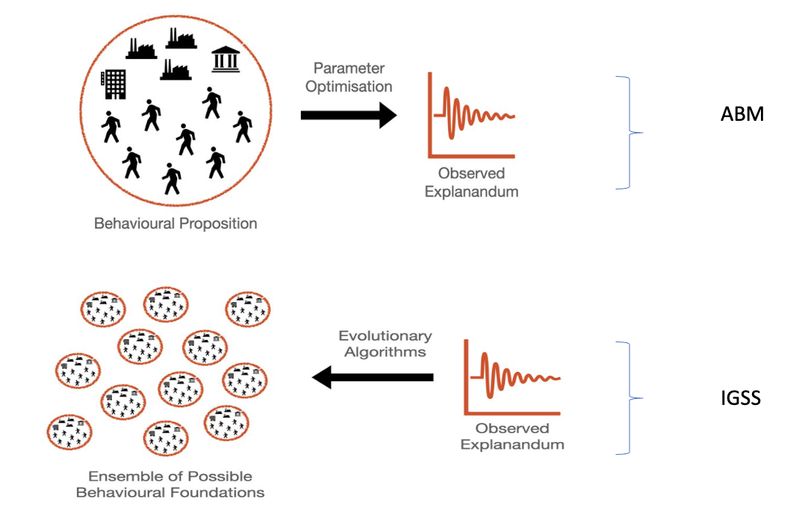
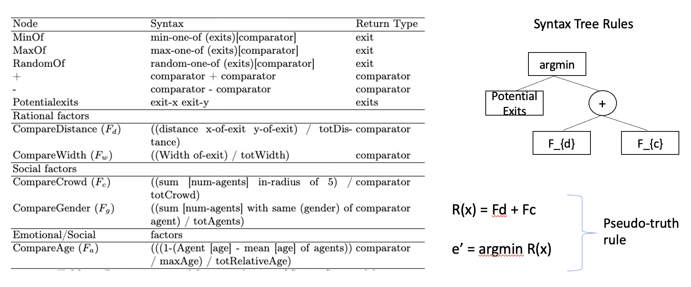
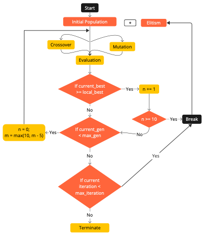
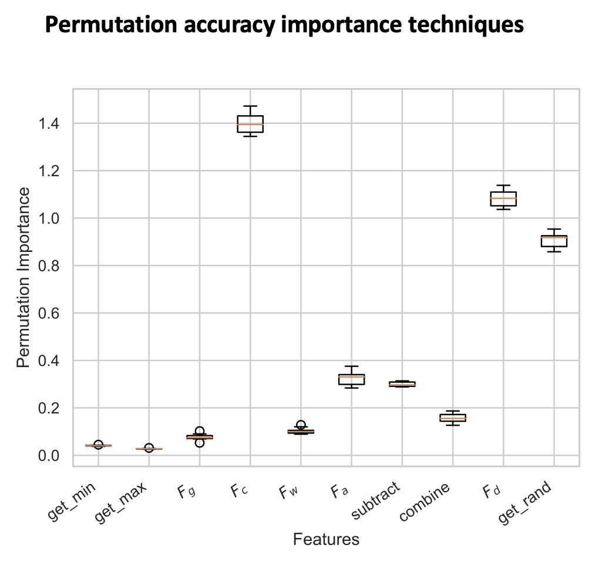
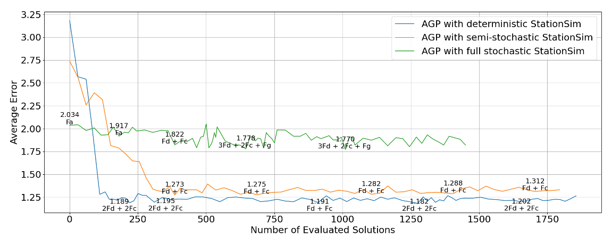
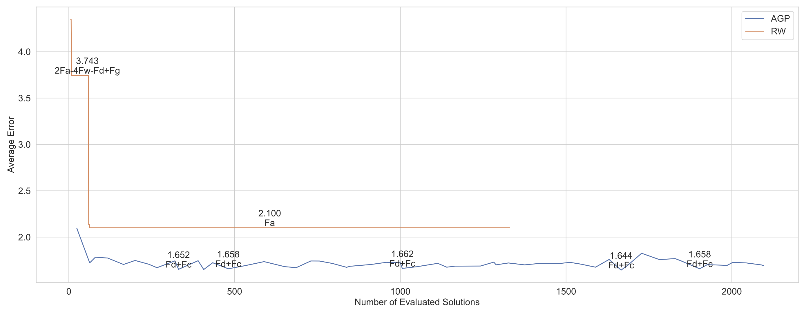
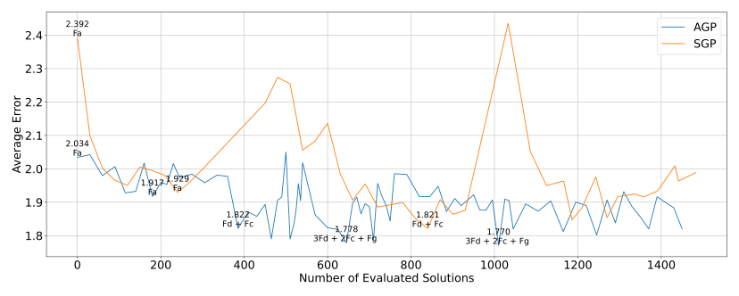

Data-driven Transport Modelling in Urban Areas
Minh Kieu
Senior Lecturer
University of Auckland, New Zealand
Lab website:
https://transportanalytics.nz
Motivation

In New Zealand alone:
Light vehicles contribute to 70% of transport emissions
62% transport GHG emissions increase since 1990
256 deaths/year due to harmful emissions from transport
The focus of my research
Improving transport resilience during and after natural disasters
Autonomous / Electric vehicles

- From 2020: Lecturer/Senior Lecturer, University of Auckland, NZ
- 2018-2019: Research Fellow, University of Leeds, UK
- 2016-2018: Research Scientist, Data61, CSIRO, Australia
- 2011-2016: PhD and Research Associate at Queensland University of Technology, Australia
Agenda
Hanoi-UTM project
Synthetic data generation
Dynamic Wireless Charging project
Inverse Generative Social Science project
Urban Transport Modelling for Sustainable Well-being in Hanoi (2020-2022)
With Nick Malleson and Lex Comber
Motorbikes are associated with many traffic issues in Hanoi
A potential motorbike ban in the CBD of Hanoi
How do people react to that?
We survey 30,000 respondents, and obtained the census data for 500,000 Hanoians
Individual perceptions to important transport policies
People don't mind congestion if they are inside a car...
There's a gap between intentions and actual choices
Hanoi-UTM project: Publications
Kieu et al. (2023) Factors affecting perceptions in transport–A deep dive into the motorbike ban in Hanoi, Vietnam. Case Studies on Transport Policy 11, 100958
Kieu et al. (2024) An open dataset on individual perceptions of transport policies. Scientific data 11 (1), 104
Kieu et al. (2024) Evaluating public sentiment towards transport policies: A causal analysis of the motorbike ban in Hanoi. Case Studies on Transport Policy 16, 101203
Synthetic Big Data of Human Activities -- SynAc (2020-2022)
Funded by FRDF Funding, University of Auckland

Kieu, Meredith and Raith (2023) Synthetic Generation of Trip Data: The Case of Smart Card. Data Science for Transportation 5 (2), 14
Wirelessly Powered Transport Infrastructure for a Low-carbon Future (2021-2026)
MBIE Endeavour Programme
Charging of Electric Vehicles: Wired or Wireless
Wireless: Static or Dynamic
5-year research programme between Transport, Electrical, Science and Bussiness School at the University of Auckland
In collaboration with ASPIRE (5-year NSF Research programme): Utah State, Purdue, Colorado, Virginia Tech, etc https://aspire.usu.edu/
Dynamic Wireless Power Transfer for Electric Vehicles

Strategic planning for dynamic charging lanes
Traffic control/management for DWPT
Vehicle routing and control
Human behaviours: how drivers will react to DWPT?
Incentivise drivers to reduce traffic congestion or traffic crashes: combination with congestion charging?
Can Autonomous Vehicles operate continuously now?
Smart routing + DWC
Multi-objective optimisation: too complex for existing algorithms


Deep Reinforcement Learning with Heterogeneous Multi-head attention mechanism
How does routing works?


We can achive lower costs and more stable state-of-charge
Our algorithm smartly anticipates the reduction in energy levels to top-up with wireless charging
Sensitivity analysis
Continous AV project: Publications
Wang, Kieu and Ranjitkar (2024) Enabling Continuous Operation of Shared Autonomous Vehicles With Dynamic Wireless Charging. IEEE Transactions on Intelligent Transportation Systems.
Wang et al. (TBA) Deep Reinforcement Learning based Approach to Shared Autonomous Vehicles Pickup, Delivery, and Charging Problem. Transportation Research Part C: Emerging Technologies (Under review)

What if we are stuck on traffic?

Split to two levels now to deal with traffic congestion
Also consider battery state-of-health now
Our algorithm vs literature
Continous AV project (with traffic congestion): Publications
Wang et al. (TBA) A Two-Stage Deep Reinforcement Learning Framework for to Enable Continuous Operation Shared Autonomous Vehicles under Dynamic Traffic Scenarios. Transportation Research Part C: Emerging Technologies (Under review)
Summary of Dynamic Wireless Charging project
AVs can operate continuously without stopping!
State-of-charge, state-of-health and traffic are not really an issue
Future works:
Incidents
Vehicle-to-grid interaction
Issues with current Agent-Based Models
1. Complexity of model design
Modellers' bias
Complex human behaviours
Agents homogeneity
2. Data availability
3. Scalability
4. Transparency and Interpretability
Emergence of unexpected behaviours from the interactions of agents
Black Box
Types of decision making in ABMs on pedestrian systems (Senanayake et al. 2024)

Majority are rule-based
Inverse Generative Social Science
Contribution
Identifying Stochastic ABMs
Pseudo-truth: StationSim model
Stochastic model: gate in, age, gender, and maximum speed,
Random avoidance behaviour
Adaptive Generative Programming for identifying Stochastic ABMs
Target dynamic pseudo-truth rule: “Exit = Randomly based on the combination of distance and crowdedness”

Other stochastic factors: gate in, age, gender, and maximum speed,
Stochastic model discovery with AGP

3 versions of StationSim
- Fully stochastic: random gate-in, age, gender, initial location, and maximum speed, activation times within train arrival waves and the “wiggle” parameter for obstacle avoidance.
- Semi-stochastic: deterministically assigning the agent attributes and activation times based on their unique IDs while retaining maximum speed and wiggle behaviour as stochastic elements.
- Deterministic: removes almost all random elements, everything determined by the agent’s unique ID and model parameters
Primitive set used for dynamic exit selection
Stochastic model discovery with AGP
n keeps the track on consecutive generations without performance improvement, while m adjust the dynamic population
Errors of 5 different AGP runs

Factors identified
AGP results on deterministic, semi-stochastic and stochastic ABM
AGP vs Simulated Anneling
AGP vs Random Walk
AGP vs Random Walk
AGP vs Standard GP
Summary of IGSS project
IGSS as the solution for issues with current Agent-Based Modelling
Model development & calibration
Transparency and interpretability
Adaptive Genetic Programming to identify stochastic models
Future works:
Real data
Complete set of rules
Call for collaboration
I love working with interesting datasets!
I am expanding to transport resilience / recovery from natural disasters or incidents
QuakeCoRE (https://quakecore.nz)
Data-driven Transport Modelling in Urban Areas
Thank you!
Questions?
Lab website:
https://transportanalytics.nz